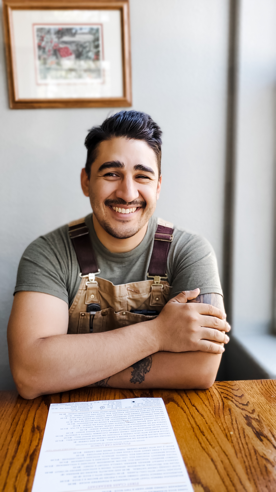
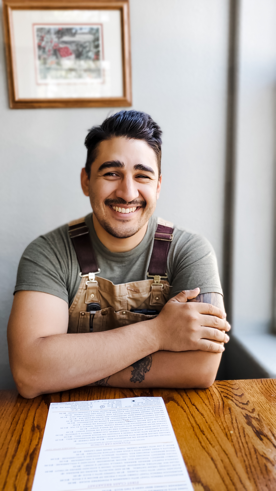

A Little About Myself
When I first decided to pursue a career in web development, I was initially overwhelmed by the sheer amount of information and resources available online. I immersed myself in learning as much as I could about JavaScript by reading books and watching videos, but I quickly realized that I needed a more structured approach to truly gain mastery of the subject.
That's when I enrolled in Santa Rosa Junior College and it was one of the best decisions I ever made. The two semesters I spent there were transformative, as I gained a much deeper understanding of not just JavaScript, but also HTML, CSS, jQuery, Bootstrap, WordPress, and SASS. During that time, I was also introduced to more advanced concepts like React and Node.js, which I found fascinating.
The assignments and projects I worked on during my time at Santa Rosa Junior College allowed me to expand on my knowledge and gain valuable experience that I know will serve me well in my future career as a web developer. I was even able to earn my certificate in Computer Studies: Web and Mobile Front-End Development, which was a huge milestone for me.
But I'm not done yet. I'm currently continuing my education to earn my associates in computer studies and eventually my bachelor's degree. I'm passionate about web development and I'm committed to constantly improving my skills and staying up-to-date with the latest trends and technologies.
There's a lot more to me than just my education and professional goals, but I believe that my journey as a web developer so far is what you're interested in hearing about. I'm excited about the future and I can't wait to see where this career takes me!
.jpg) 

Recent Projects
Portfolio Website
For this website, I utilized a combination of Bootstrap and CSS to showcase my ability to create a functional and visually appealing portfolio site. To ensure a cohesive design, I created a rough layout using Figma for the images, headings, and text. The end result is a responsive and user-friendly website that effectively showcases my skills and experience.
Dream Home Construction Now
Using Figma, I meticulously crafted the design for this website, and then brought it to life with a combination of Bootstrap, SASS, and JavaScript. The website includes four pages, each of which provides comprehensive information about a construction company, covering the who, what, and where. To create a clean and modern aesthetic, I utilized SASS to implement variables, mixins, and nesting techniques in the styling process. The end result is a dynamic and intuitive website that showcases my expertise in design and development.